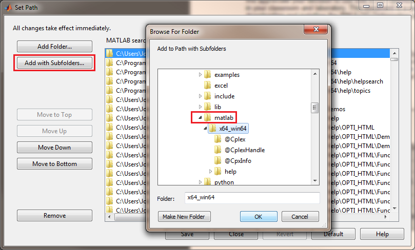

IBM ILOG CPLEX Installation Guide
CPLEX is an industry standard linear and quadratic solver, with facilities for discrete variables and quadratic constraints. This guide was written for CPLEX v12.4.
Obtaining CPLEX
1) Visit the
IBM ILOG
Academic Initiative page and register for the IBM Academic Initiative.
2) Visit the
IBM Get Software & System Access page and click on "Download from the
Software Catalog", you will need to have logged in to your new IBM account.
3) Enter "cplex" in the 'Find by Text' textbox. Under WebSphere Software, there
should be "IBM ILOG CPLEX Optimization Studio Academic Research Edition vxx.x".
Click on the latest version.
4) Select the tickbox of the relevant download (e.g. IBM ILOG CPLEX Optimization
Studio V12.5 for Windows x86-64 Multilingual), read
and agree to the terms and conditions and click "Download now".
Installing CPLEX
6) Once the download has completed, click "Launch" from
the IBM Download Director and wait until the installation is complete. I install
to the default location.
Interfacing to OPTI Toolbox
8) The final step is to add the CPLEX MATLAB Toolbox to
the MATLAB path. Start MATLAB and click File -> Set Path
9) From the path tool, click Add with Subfolders and navigate to the
installation directory of CPLEX:

If you installed in the default directory, you will selecting the following path (and all subfolders) to install (modify as appropriate on your system):
C:\Program Files\IBM\ILOG\CPLEX_Studio125\cplex\matlab\x64_win64
Note if you have downloaded the 32bit version, your path may be slightly different (e,.g. x86_win32).
10) Click OK and type the following at the MATLAB command line to ensure everything is working!
>> Cplex
Copyright © 2011-2013 Jonathan Currie (I2C2)